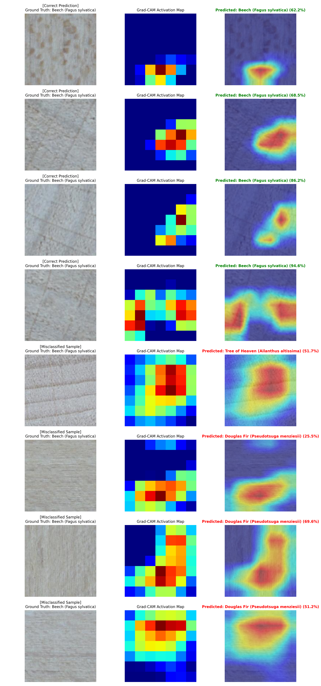
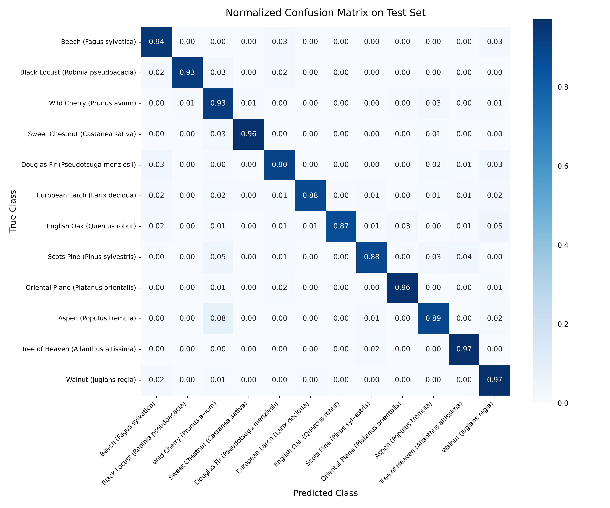
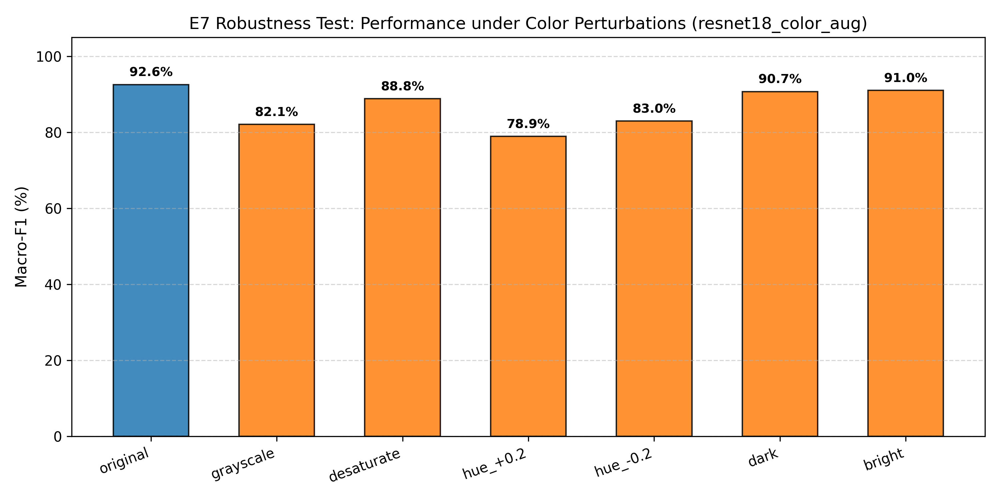
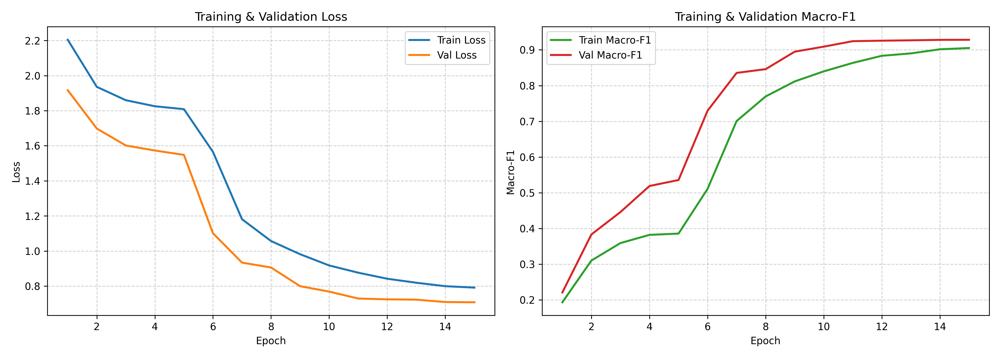

ResNet-18
Sẵn sàngTWO-STAGE TRANSFER LEARNING
DỰ ĐOÁN TOP-1Chưa có ảnh
Chọn ảnh để bắt đầu
PHÂN PHỐI TOP-3
Chưa có dự đoán.
Tải ảnh cận cảnh vân gỗ để nhận dự đoán từ mô hình ResNet-18.
Chọn một ảnh để bắt đầu.
Mô hình dự đoán trong 12 loài của bộ dữ liệu WOOD-AUTH.
Các dự đoán dưới đây tương ứng với ảnh bạn tải lên.
TWO-STAGE TRANSFER LEARNING
PHÂN PHỐI TOP-3
Chưa có dự đoán.
CLASSICAL TEXTURE ML
PHÂN PHỐI TOP-3
Chưa có dữ liệu dự đoán.
50-LAYER DEEP CONVNET
PHÂN PHỐI TOP-3
Chưa có dữ liệu dự đoán.
MODERN CONVNET
PHÂN PHỐI TOP-3
Chưa có dữ liệu dự đoán.
Báo cáo giới thiệu và so sánh các mô hình: ResNet-18, Baseline LBP + GLCM + SVM, ResNet-50, và ConvNeXt-Tiny trên cùng một mẫu ảnh thớ gỗ để so sánh độ chính xác và khả năng nhận diện.
Các ảnh đại diện cho 12 loài gỗ trong bộ dữ liệu.
Mô hình ResNet-18 đã học được những đặc trưng sinh học nào? Grad-CAM trên lớp layer4 cho thấy các vùng ảnh ảnh hưởng đến dự đoán của mô hình.

Hàng trên hiển thị các mẫu phân loại chính xác: vùng đỏ tập trung dọc theo các tia gỗ phản quang (Gỗ Ti trăn, Sồi) và ranh giới sinh trưởng mùa xuân/thu (Gỗ Thông Douglas). Hàng dưới minh họa các trường hợp nhầm lẫn giữa các loài có cấu trúc vi mô tương đồng cao (Dẻ gai vs Sồi khi thiếu tia gỗ).
Kết quả theo báo cáo trên 2.836 ảnh Test. Các kết quả ResNet-50, ConvNeXt-Tiny và giai đoạn 1 cần được đối chiếu thêm với tệp thực nghiệm.

Đường chéo chính chiếm đa số tuyệt đối với độ chính xác trung bình 92.74%. Giá trị trên đường chéo cho thấy tỷ lệ nhận diện đúng của từng loài.

Đánh giá tính bền bỉ trước 7 điều kiện màu sắc mô phỏng (Grayscale, Desaturate, Hue ±0.2, Dark, Bright). Mô hình duy trì F1 > 78% ngay cả khi lệch màu mạnh.

Giai đoạn 1 (Warm-up 5 epochs, đóng băng backbone) giúp hội tụ đầu phân loại ổn định. Giai đoạn 2 (Fine-tuning 10 epochs với lr thấp) tối ưu hóa toàn diện biểu diễn thớ gỗ.
| Tên Mô Hình | Chiến Lược Huấn Luyện | Độ Chính Xác (Accuracy) | Macro-F1 Score | Độ Trễ CPU | Đặc Điểm & Nhận Xét |
|---|---|---|---|---|---|
| Baseline LBP + GLCM + SVM | Trích xuất 64 chiều texture + RBF Kernel | 80.99% | 78.92% | 0.36 ms/ảnh | Tốc độ rất nhanh nhưng F1 thấp hơn -13.65% do đặc trưng thủ công dễ bão hòa. |
| ResNet-18 (Giai đoạn 1) | Chỉ tinh chỉnh Head, đóng băng ImageNet | 86.10% | 85.40% | 14.73 ms/ảnh | Trọng số ImageNet ban đầu chỉ nhận diện vật thể thông thường, cần fine-tune để học cấu trúc vi mô. |
| ResNet-18 (Mô Hình Đề Xuất) | Two-Stage + Color Augmentation | 92.74% | 92.57% | 14.73 ms/ảnh | Điểm tối ưu Pareto: Độ chính xác cao, kích thước nhẹ (43 MB), tốc độ thời gian thực trên CPU. |
| ResNet-50 | Two-Stage + Color Augmentation | 93.41% | 93.15% | 32.40 ms/ảnh | F1 tăng nhẹ +0.58% nhưng độ trễ CPU tăng hơn 2.2 lần (32.4 ms so với 14.7 ms). |
| ConvNeXt-Tiny | Depthwise Sep Conv + 7x7 Kernels | 93.85% | 93.52% | 38.10 ms/ảnh | Độ chính xác cao nhất (+0.95% F1) nhưng mô hình nặng và độ trễ CPU cao hơn 2.6 lần. |